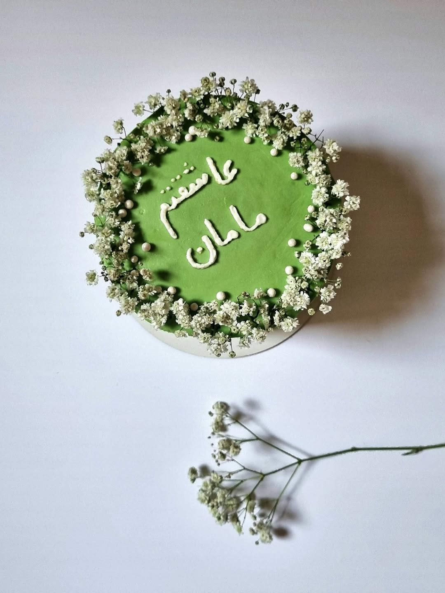
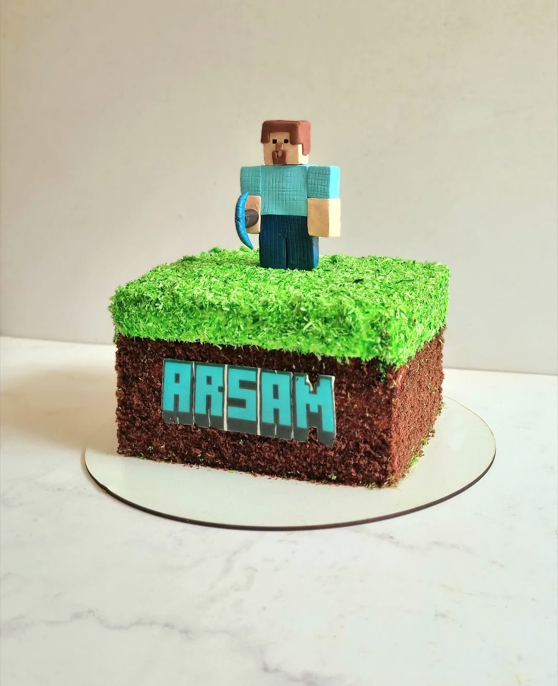
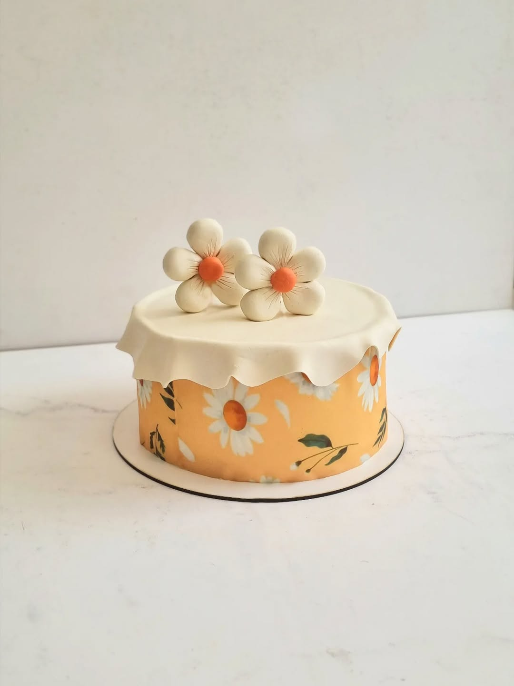
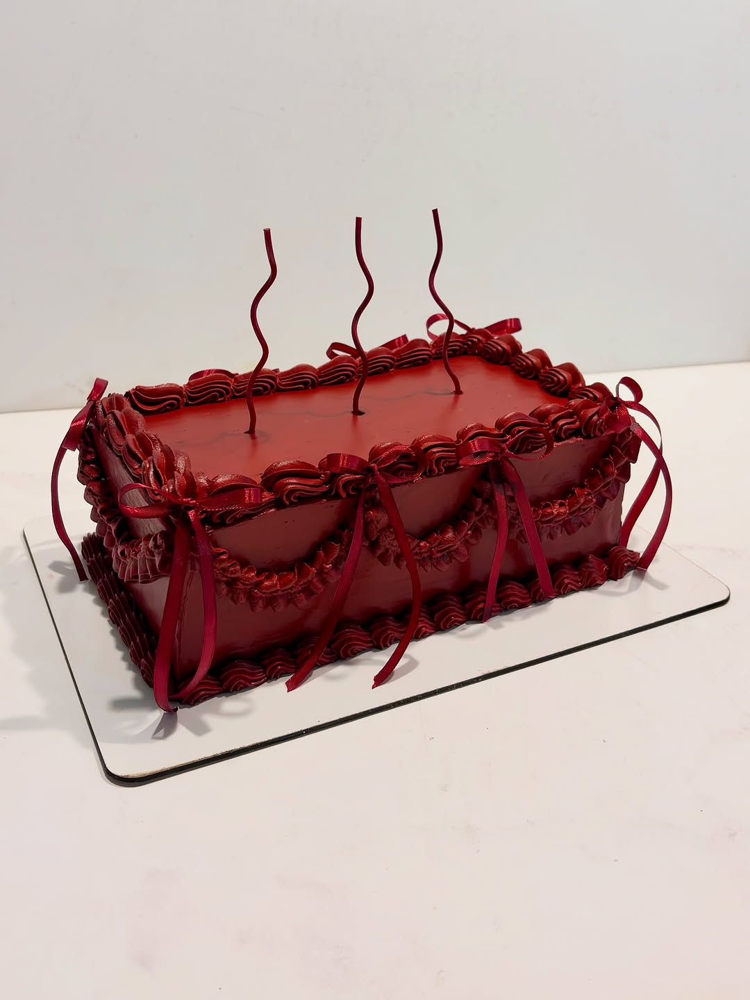
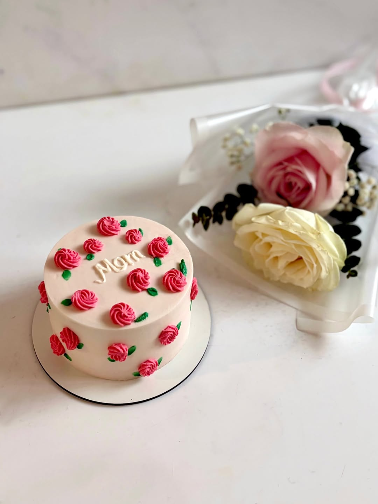
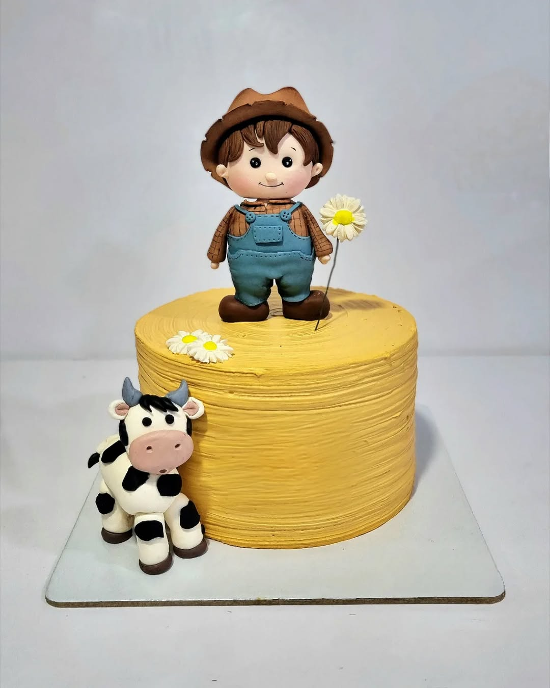
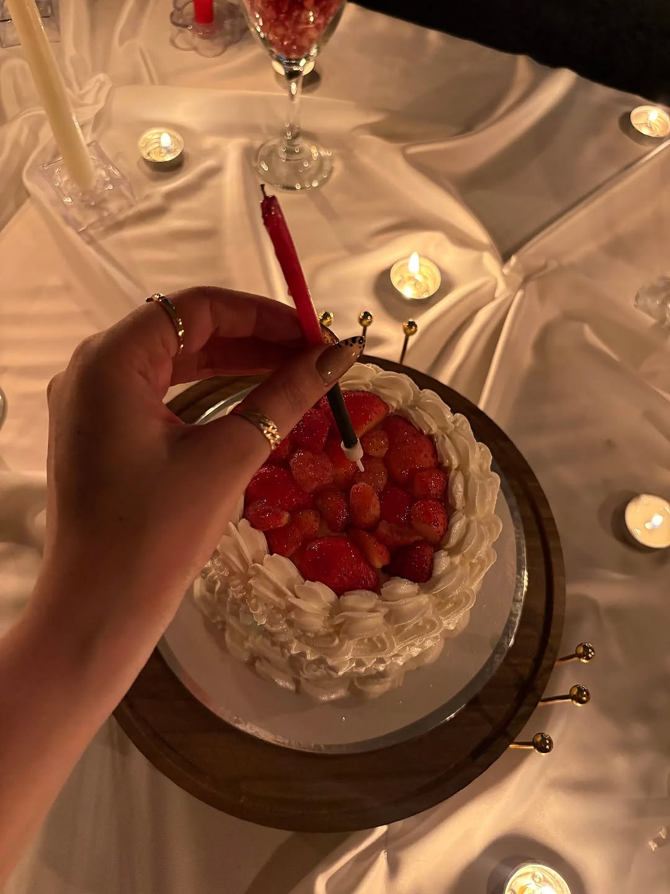
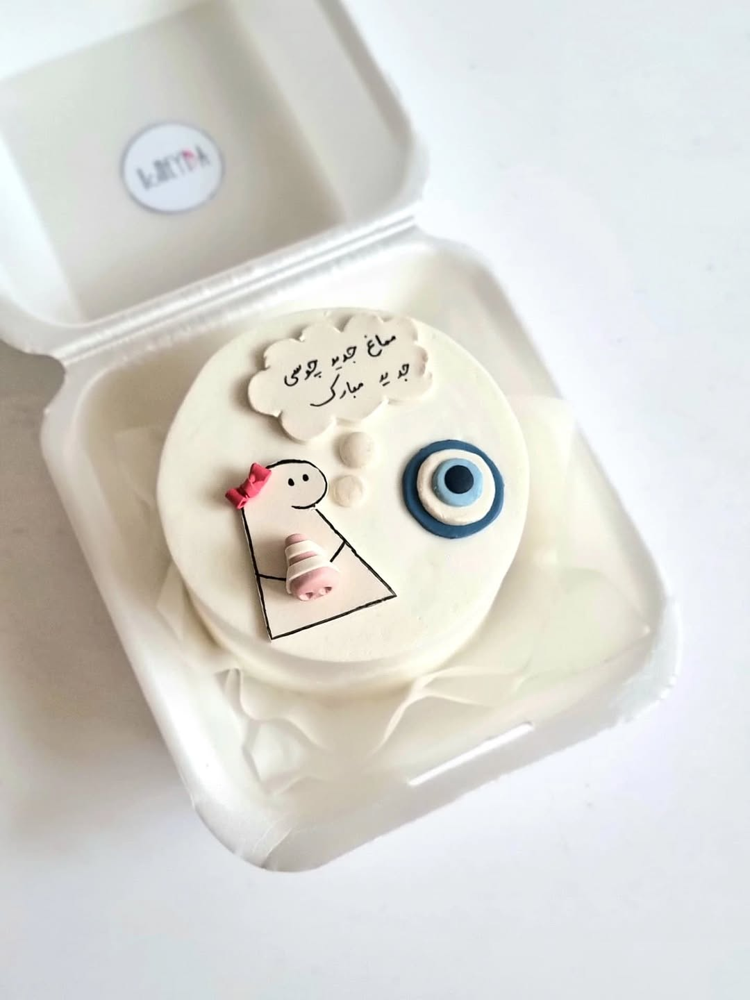

کیک عروسی شیراز — راهنمای کامل ۱۴۰۵
شش پرسش قبل از سفارش کیک عروسی، یک گفتگو دربارهی طعمهای شیرازی، و یک تایملاین واقعی برای فصل اوج عروسی. حاصلِ چهار سال ساختنِ کیک عروسی در هومیدا.
ادامهی مطلب— دفترچهی آناهیتا —
از پشت پردهی هر کیک، تا فرهنگ شیرینی شیراز. داستانهایی که در آشپزخانه ساخته میشوند و سپس روی میز شما زندگی میکنند.

شش پرسش قبل از سفارش کیک عروسی، یک گفتگو دربارهی طعمهای شیرازی، و یک تایملاین واقعی برای فصل اوج عروسی. حاصلِ چهار سال ساختنِ کیک عروسی در هومیدا.
ادامهی مطلب
از ماینکرفت و باب اسفنجی تا اردک کوچولو و خرس تدی — بیست تمی که در هومیدا بیشترین سفارش را دارند، با راهنمای انتخاب بر اساس سن کودک.
ادامهی مطلب
پنج مرحله، از پیامِ اول تا تحویل کیک روی میز شما. چه چیزی بنویسیم، چقدر زمان لازم است، و چه انتظاری داشته باشیم — شفاف و بدونِ هزینهی پنهان.
ادامهی مطلب
یلدا فقط یک شب نیست؛ یک طعم است، یک رنگ، یک خاطره. این یادداشت داستانِ کیک یلدای هومیداست — انار، فیلینگ پستهای، و سرخیِ شب چله.
ادامهی مطلب
از حافظ و سعدی تا گلاب قمصر، از سهان تا یلدا — شیراز خود یک شیرینی است که هزار سال است طعم میدهد. دربارهی شهری که هومیدا در آن متولد شد.
ادامهی مطلب
ماینکرفت، پسرک مزرعه، خرس تدی، اردک کوچولو — هر شخصیت روی کیکهای هومیدا ساعتها در دست آناهیتا شکل میگیرد. این یادداشت پشت پردهی این هنر است.
ادامهی مطلب
روبانهای فوندانتی، چینهای خامهای، گلهای پایپینگ — چرا کیک وینتیج دوباره روی میز نشست؟ سفری به دههی پنجاه و شصت، با چاشنیِ پینترست.
ادامهی مطلببرای مادر، گل میبَری؟ ما کیکی میسازیم که در آن هم گل هست، هم بوسه، هم یک «دوستت دارمِ» نوشته با خامه. دربارهی شیرینترین زبانِ تشکر.
ادامهی مطلب
از کره به شیراز، در یک جعبهی کوچک. بنتوکیک چیست، چرا اینقدر دلپذیر شده، و چطور میتوان آن را به یک پیامِ شیرین تبدیل کرد؟
ادامهی مطلب